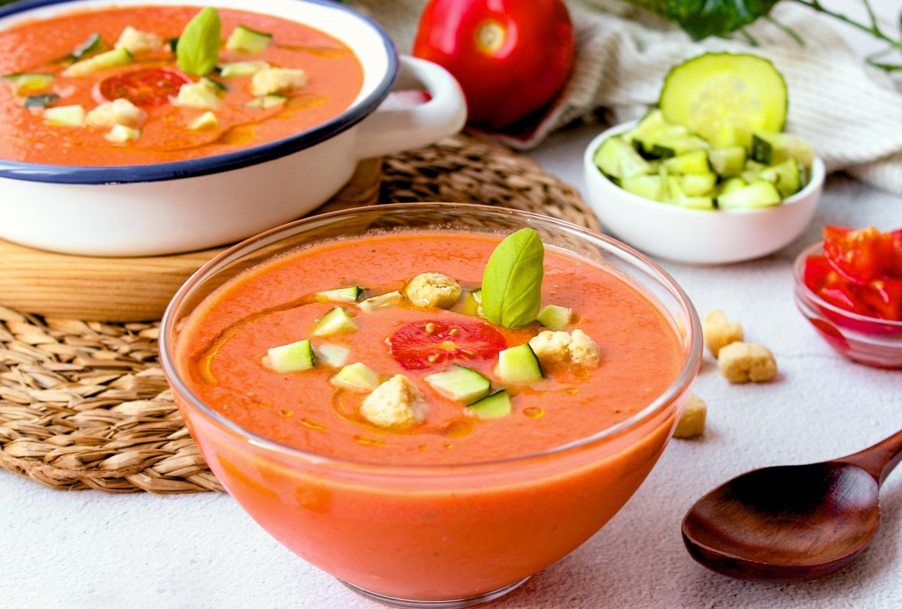

Gazpacho Andaluz

Ingredientes
- 1 kg de tomates maduros
- 1 pimiento verde
- 1 pepino
- 1 diente de ajo
- Aceite de oliva virgen extra
- Vinagre de vino
- Sal
- Pan duro (opcional)
Elaboración
- Lavar y trocear todas las verduras.
- Poner las verduras en la batidora junto con el ajo y el pan.
- Añadir el aceite, el vinagre y la sal.
- Triturar hasta conseguir una textura fina.
- Colar si se desea una textura más suave y enfriar en la nevera antes de servir.